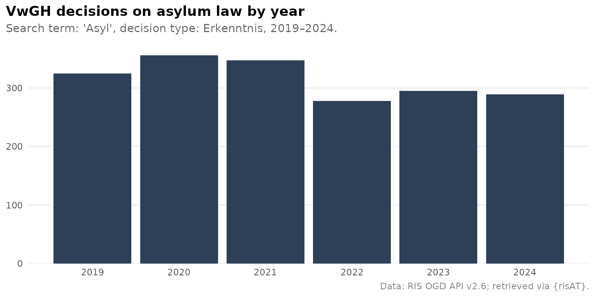
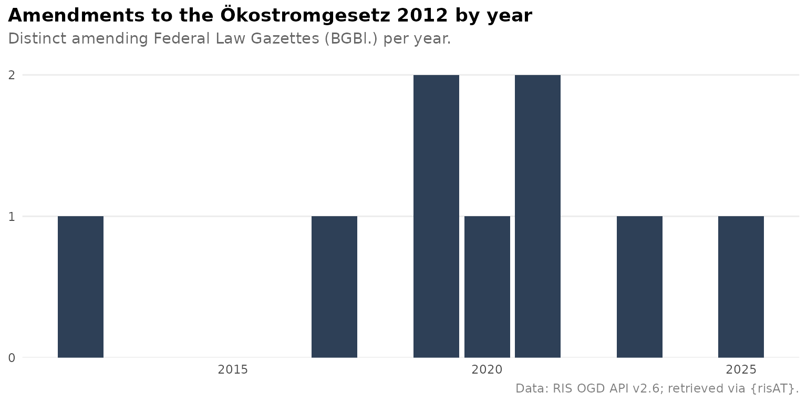

This vignette walks through the main features of {risAT} using concrete examples. For a full parameter reference, see the function reference.
{risAT} provides a tidyverse-friendly interface to the Austrian RIS (Rechtsinformationssystem)
Open Government Data API v2.6. It covers the /Judikatur
endpoint — case law from all nine supported court applications — and the
/Bundesrecht endpoint for consolidated federal law, and is
designed for reproducible legal research.
First search
The fastest way in is a court-specific wrapper. Each wrapper targets a single court and provides typed, validated arguments. Let’s retrieve Administrative Court (VwGH) decisions on housing law (Baurecht):
library(risAT)
results <- ris_search_vwgh(query = "Baurecht")
results#> # A tibble: 9,637 × 5
#> id document_type case_number decision_date vwgh_decision_type
#> <chr> <chr> <chr> <chr> <chr>
#> 1 JWT_2025050017_20… Text Ro 2025/05… 2026-05-06 Beschluss
#> 2 JWR_2025050017_20… Rechtssatz Ro 2025/05… 2026-05-06 Beschluss
#> 3 JWR_2025050017_20… Rechtssatz Ro 2025/05… 2026-05-06 Beschluss
#> 4 JWT_2025070002_20… Text Ro 2025/07… 2026-04-22 Erkenntnis
#> 5 JWT_2023050255_20… Text Ra 2023/05… 2026-04-10 Beschluss
#> 6 JWR_2023050255_20… Rechtssatz Ra 2023/05… 2026-04-10 Beschluss
#> 7 JWR_2023050255_20… Rechtssatz Ra 2023/05… 2026-04-10 Beschluss
#> 8 JWT_2025050071_20… Text Ra 2025/05… 2026-04-10 Beschluss
#> 9 JWR_2025050071_20… Rechtssatz Ra 2025/05… 2026-04-10 Beschluss
#> 10 JWT_2025050145_20… Text Ra 2025/05… 2026-03-27 Erkenntnis
#> # ℹ 9,627 more rowsAll search functions return a tibble — one row per document. The most frequently used columns are:
| Column | Description |
|---|---|
id |
Unique RIS document identifier |
case_number |
Business number (Geschäftszahl) |
decision_date |
Date of the decision |
document_type |
Rechtssatz or Text (full decision) |
content_urls |
List-column of download links |
Filtering results
All wrappers share a common set of filter arguments. Date ranges
follow ISO 8601 ("YYYY-MM-DD"), and
decision_type accepts the German API values and lowercase
aliases.
results <- ris_search_vwgh(
query = "Asyl",
decision_date_from = "2023-01-01",
decision_date_to = "2024-12-31",
decision_type = "Erkenntnis"
)
nrow(results)#> [1] 584The in_ris_since argument is a convenient shortcut for
recently published documents:
recent <- ris_search_vwgh(in_ris_since = "one_month")
nrow(recent)#> [1] 855Decisions over time
Because results come back as a tidy tibble, downstream analysis with {dplyr} and {ggplot2} is straightforward. Below we retrieve VwGH asylum decisions from 2019 to 2024 and visualise the yearly count.
df_asyl <- ris_search_vwgh(
query = "Asyl",
decision_date_from = "2019-01-01",
decision_date_to = "2024-12-31",
decision_type = "Erkenntnis"
)
library(dplyr)
library(ggplot2)
library(lubridate)
df_asyl |>
mutate(year = year(as.Date(decision_date))) |>
count(year) |>
ggplot(aes(x = year, y = n)) +
geom_col(fill = "#2E4057") +
scale_x_continuous(breaks = 2019:2024) +
scale_y_continuous(expand = expansion(mult = c(0, 0.05))) +
labs(
title = "VwGH decisions on asylum law by year",
subtitle = "Search term: 'Asyl', decision type: Erkenntnis, 2019–2024.",
caption = "Data: RIS OGD API v2.6; retrieved via {risAT}.",
x = NULL, y = NULL
) +
theme_minimal() +
theme(
plot.title = element_text(face = "bold"),
plot.title.position = "plot",
plot.subtitle = element_text(color = "grey40", margin = margin(b = 10)),
plot.caption = element_text(color = "grey50", size = rel(0.8)),
panel.grid.major.x = element_blank(),
panel.grid.minor = element_blank()
)
Court-specific wrappers
risAT provides wrappers for all nine Judikatur applications:
| Court | Function |
|---|---|
| VfGH (Constitutional Court) | ris_search_vfgh() |
| VwGH (Administrative Court) | ris_search_vwgh() |
| Justiz (OGH, OLG, LG, BG) | ris_search_justiz() |
| BVwG (Federal Administrative Court) | ris_search_bvwg() |
| LVwG (State Administrative Courts) | ris_search_lvwg() |
| DSK / DSB (Data Protection) | ris_search_dsk() |
| DOK (Disciplinary Bodies) | ris_search_dok() |
| PVAK (Staff Representation) | ris_search_pvak() |
| GBK (Equal Treatment Commission) | ris_search_gbk() |
Some wrappers expose court-specific parameters.
ris_search_justiz() lets you filter by court and legal
area:
results_ogh <- ris_search_justiz(
query = "Schadenersatz",
court = "OGH",
legal_area = "Zivilrecht"
)
nrow(results_ogh)#> [1] 9409ris_search_lvwg() restricts results to a single state
administrative court via federal_state. English state names
are accepted:
results_wien <- ris_search_lvwg(
federal_state = "Vienna", # also accepted: "Wien"
decision_type = "Erkenntnis"
)
nrow(results_wien)#> [1] 9602ris_search_gbk() filters Equal Treatment Commission
decisions by commission, senate, and discrimination ground — English
aliases are supported:
results_gbk <- ris_search_gbk(
discrimination_ground = "gender", # "Geschlecht"
commission = "private_sector" # "Gleichbehandlungskommission"
)
nrow(results_gbk)#> [1] 284VfGH: constitutional court decisions
The VfGH wrapper defaults to legal principles (Rechtssätze)
rather than full decision texts — the most common use case for
constitutional court research. Toggle via
search_legal_principles and
search_decision_text:
# Default: Rechtssätze (RS)
results_vfgh <- ris_search_vfgh(query = "Grundrecht")
nrow(results_vfgh)
# Request full decision texts instead
results_vfgh_et <- ris_search_vfgh(
query = "Grundrecht",
search_legal_principles = FALSE,
search_decision_text = TRUE
)#> [1] 1530Verifying results with echo
Setting echo = TRUE prints the search parameters and a
direct link to the same results on the official RIS website. This is
useful for:
- Verification — open the URL in a browser and compare with the API results.
- Sharing — paste the URL to share a query with colleagues who don’t use R.
- Exploration — browse results on the RIS website before refining your query.
results <- ris_search_vwgh(
query = "Baurecht",
decision_date_from = "2024-01-01",
echo = TRUE
)The printed output shows the total hit count and a clickable RIS URL that preserves all filter parameters.
Working with list-columns
Two columns contain richer nested data.
content_urls — download links
Each element of content_urls is a character vector of
URLs pointing to the document in different formats (XML, HTML, RTF,
PDF):
results$content_urls[[1]]#> [1] "https://www.ris.bka.gv.at/Dokumente/Vwgh/JWT_2025050017_20260506J00/JWT_2025050017_20260506J00.xml"
#> [2] "https://www.ris.bka.gv.at/Dokumente/Vwgh/JWT_2025050017_20260506J00/JWT_2025050017_20260506J00.html"
#> [3] "https://www.ris.bka.gv.at/Dokumente/Vwgh/JWT_2025050017_20260506J00/JWT_2025050017_20260506J00.rtf"
#> [4] "https://www.ris.bka.gv.at/Dokumente/Vwgh/JWT_2025050017_20260506J00/JWT_2025050017_20260506J00.pdf"To extract all PDF URLs across results, filter by file extension:
library(purrr)
pdf_urls <- results |>
mutate(
pdf_url = map_chr(
content_urls,
\(x) {
hit <- x[grepl("\\.pdf$", x, ignore.case = TRUE)]
if (length(hit)) hit[[1]] else NA_character_
}
)
) |>
filter(!is.na(pdf_url)) |>
select(case_number, decision_date, pdf_url)
pdf_urls#> # A tibble: 9,637 × 3
#> case_number decision_date pdf_url
#> <chr> <chr> <chr>
#> 1 Ro 2025/05/0017 2026-05-06 https://www.ris.bka.gv.at/Dokumente/Vwgh/JWT_2…
#> 2 Ro 2025/05/0017 2026-05-06 https://www.ris.bka.gv.at/Dokumente/Vwgh/JWR_2…
#> 3 Ro 2025/05/0017 2026-05-06 https://www.ris.bka.gv.at/Dokumente/Vwgh/JWR_2…
#> 4 Ro 2025/07/0002 2026-04-22 https://www.ris.bka.gv.at/Dokumente/Vwgh/JWT_2…
#> 5 Ra 2023/05/0255 2026-04-10 https://www.ris.bka.gv.at/Dokumente/Vwgh/JWT_2…
#> 6 Ra 2023/05/0255 2026-04-10 https://www.ris.bka.gv.at/Dokumente/Vwgh/JWR_2…
#> 7 Ra 2023/05/0255 2026-04-10 https://www.ris.bka.gv.at/Dokumente/Vwgh/JWR_2…
#> 8 Ra 2025/05/0071 2026-04-10 https://www.ris.bka.gv.at/Dokumente/Vwgh/JWT_2…
#> 9 Ra 2025/05/0071 2026-04-10 https://www.ris.bka.gv.at/Dokumente/Vwgh/JWR_2…
#> 10 Ra 2025/05/0145 2026-03-27 https://www.ris.bka.gv.at/Dokumente/Vwgh/JWT_2…
#> # ℹ 9,627 more rowsRIS website URLs
Search results carry the equivalent RIS website URLs as attributes.
Use ris_app_url() and ris_search_url() to
retrieve them before applying dplyr operations that may drop custom
attributes:
ris_app_url(results)
ris_search_url(results)#> https://www.ris.bka.gv.at/Vwgh/
#> https://www.ris.bka.gv.at/Ergebnis.wxe?Abfrage=Vwgh&Entscheidungsart=Undefined&Sammlungsnummer=&Index=&SucheNachRechtssatz=True&SucheNachText=True&GZ=&VonDatum=&BisDatum=05.06.2026&Norm=&ImRisSeitVonDatum=&ImRisSeitBisDatum=&ImRisSeit=Undefined&ResultPageSize=100&Suchworte=Baurecht&Position=1&SkipToDocumentPage=trueFederal law: how often has a law been amended?
Beyond case law, risAT also covers consolidated federal law
(Bundesrecht in konsolidierter Fassung) through
ris_search_federal(). Here each row is one consolidated
version of a provision, and the amendments column
records the amending Federal Law Gazettes (Bundesgesetzblätter,
“BGBl.”). We can use that to answer a common question: how often
has a law been amended?
We’ll use the Ökostromgesetz 2012 (Green Electricity Act) as an example:
oekostrom <- ris_search_federal(title = "Ökostromgesetz 2012")
nrow(oekostrom)#> [1] 190The amending acts are listed as free text in the
amendments column (one BGBl. reference per
amendment). Each provision lists the amendments that affected it, so the
distinct gazette references across all provisions give the
amendment history of the whole law. We extract them with a regular
expression and deduplicate:
library(dplyr)
library(stringr)
amendments <- oekostrom |>
pull(amendments) |>
str_extract_all("BGBl\\.\\s*[IVX]*\\s*Nr\\.\\s*\\d+/\\d{4}") |>
unlist() |>
str_squish() |>
unique()
# How often has the law been amended?
length(amendments)
#> [1] 9
sort(amendments)
#> [1] "BGBl. I Nr. 108/2017" "BGBl. I Nr. 11/2012" "BGBl. I Nr. 12/2021"
#> [4] "BGBl. I Nr. 150/2021" "BGBl. I Nr. 198/2023" "BGBl. I Nr. 24/2020"
#> [7] "BGBl. I Nr. 42/2019" "BGBl. I Nr. 69/2025" "BGBl. I Nr. 97/2019"Because each BGBl. reference ends in a year, we can also
chart the amendment activity over time:
library(ggplot2)
tibble(amendment = amendments) |>
mutate(year = as.integer(str_extract(amendment, "\\d{4}$"))) |>
count(year) |>
ggplot(aes(x = year, y = n)) +
geom_col(fill = "#2E4057") +
scale_y_continuous(
breaks = scales::breaks_width(1),
expand = expansion(mult = c(0, 0.05))
) +
labs(
title = "Amendments to the Ökostromgesetz 2012 by year",
subtitle = "Distinct amending Federal Law Gazettes (BGBl.) per year.",
caption = "Data: RIS OGD API v2.6; retrieved via {risAT}.",
x = NULL, y = NULL
) +
theme_minimal() +
theme(
plot.title = element_text(face = "bold"),
plot.title.position = "plot",
plot.subtitle = element_text(color = "grey40", margin = margin(b = 10)),
plot.caption = element_text(color = "grey50", size = rel(0.8)),
panel.grid.major.x = element_blank(),
panel.grid.minor = element_blank()
)
The two-step pattern
Under the hood every wrapper calls two lower-level functions:
-
ris_req_case_law()— builds anhttr2request object (no network call). -
ris_perform_case_law()— executes the request with automatic pagination.
Use these directly for more control — to inspect the URL before sending, or to target application codes not covered by a named wrapper:
# Build — no network call yet
req <- ris_req_case_law(
application = "Vwgh",
query = "Baurecht"
)
# Inspect the URL before sending
req$url
# Execute — fetches all pages automatically
results <- ris_perform_case_law(req)
nrow(results)#> https://data.bka.gv.at/ris/api/v2.6/Judikatur?Applikation=Vwgh&Suchworte=Baurecht&SortierungSortDirection=Descending&SortierungSortedByColumn=Datum&DokumenttypSucheInEntscheidungstexten=true&DokumenttypSucheInRechtssaetzen=true&Seitennummer=1&DokumenteProSeite=OneHundred